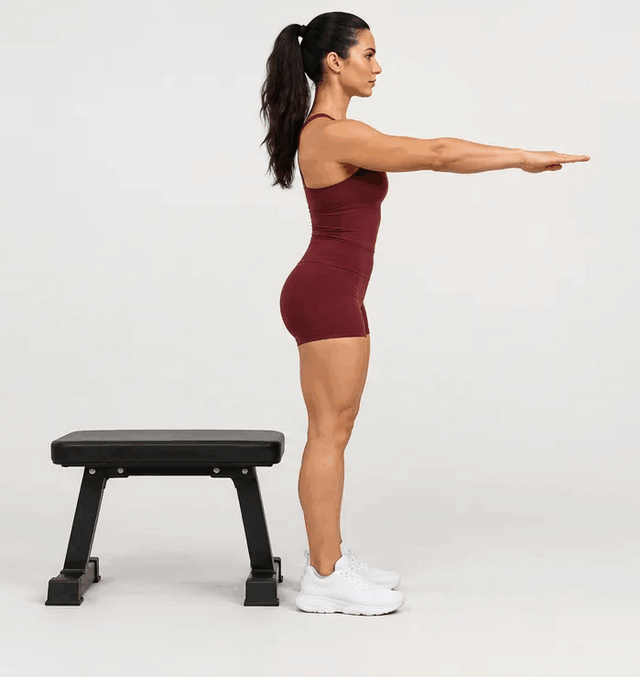

01 PIERNAS
Sentadilla al banco
2 × 10series × repeticiones

Cómo hacerlo
- Parate frente al banco con los pies a un ancho cómodo.
- Llevá la cadera hacia atrás y bajá con control hasta rozar el banco.
- Empujá el piso con ambos pies y volvé a estar de pie.
Prestá atención Mantené el pecho erguido y las rodillas alineadas con los pies.